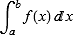

Home Page
F.A.Qs
Statistical Charts
Past Contests
Scheduled Contests
Award Contest
| Online Judge | Problem Set | Authors | Online Contests | User | ||||||
|---|---|---|---|---|---|---|---|---|---|---|
| Web Board Home Page F.A.Qs Statistical Charts | Current Contest Past Contests Scheduled Contests Award Contest | |||||||||
|
Language: Numerical Integration
Description In his freshman year, flymouse studied integral. Symbolic integration frustrated him a lot. He was often confused by those subtle techniques: alternately trying integration by substitution and integration by parts until the integrand appears in a tabulated form then employing integration by quadrature to have the work finally done. In contrast, numerical integration intrigued him much. By following some fixed procedures such as Newton-Cotes formulas, he could easily find the approximation to some definite integrals without too much effort. Given the exercises flymouse did, can your program do as nice a job as flymouse did? Input The input contains several test cases. Each test case consists of one line containing a univariate function f(x) and two real numbers a and b meaning the approximate value of  is to be found. f(x) is expressed as a C-expression-like string. Allowed tokens are summarized in the following table:
And the syntax is given below:
Operator precedence and associativity are almost the same as those in C except that ‘ f(x) is not necessarily continuous. It can have singularities which are always isolated if exist. It can be oscillatory, but it will never be oscillatory in the neighborhood of singularities where it blows up. The integral is guaranteed to converge. Length of the interval over which f(x) is integrated is not longer than 10. Process to end of file. Output For each test case, output one line with only the approximate value of the integral rounded to exactly four digits past the decimal point. Sample Input x+1 0 1 +x 0 1 x-1 0 1 -x 0 1 x*x 0 1 x/2 0 1 x^-x 0 1 (x+1)*x 0 1 -(x+1) 0 1 sin(x) 0 1 cos(x) 0 1 tan(x) 0 1 log(x) 1 2 exp(x) 0 1 asin(x) 0 1 acos(x) 0 1 atan(x) 0 1 abs(x) 0 1 x 0 1 1 0 1 sin(x)/x 0 1 Sample Output 1.5000 0.5000 -0.5000 -0.5000 0.3333 0.2500 1.2913 0.8333 -1.5000 0.4597 0.8415 0.6156 0.3863 1.7183 0.5708 1.0000 0.4388 0.5000 0.5000 1.0000 0.9461 Hint
Source POJ Monthly--2006.12.31, galaxy |
[Submit] [Go Back] [Status] [Discuss]
All Rights Reserved 2003-2013 Ying Fuchen,Xu Pengcheng,Xie Di
Any problem, Please Contact Administrator